OpenEconomics
Designing clarity for public funding, economic evaluation and strategic investment.
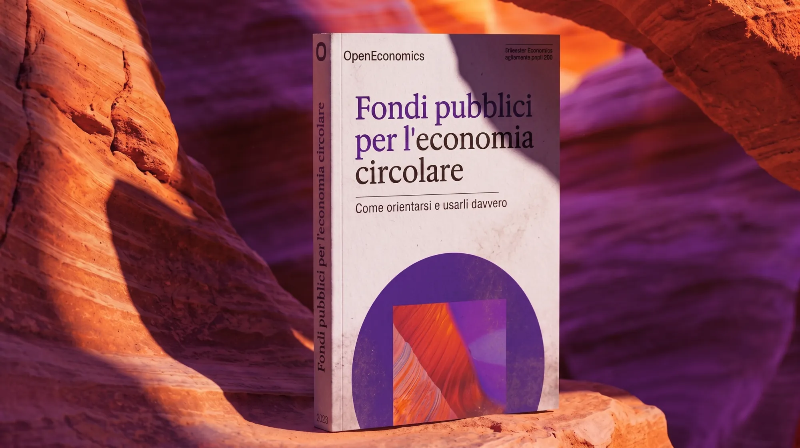
Overview
OpenEconomics needed a communication system able to make highly technical topics clear, recognisable and engaging.
The project spans publications, LinkedIn editorial series, presentations, website assets and AI-generated imagery. One editorial grammar of typography, colour and hierarchy connects every format, while abstract textures, halftones and AI images add depth to corporate content. The result is a flexible language built to scale across touchpoints.
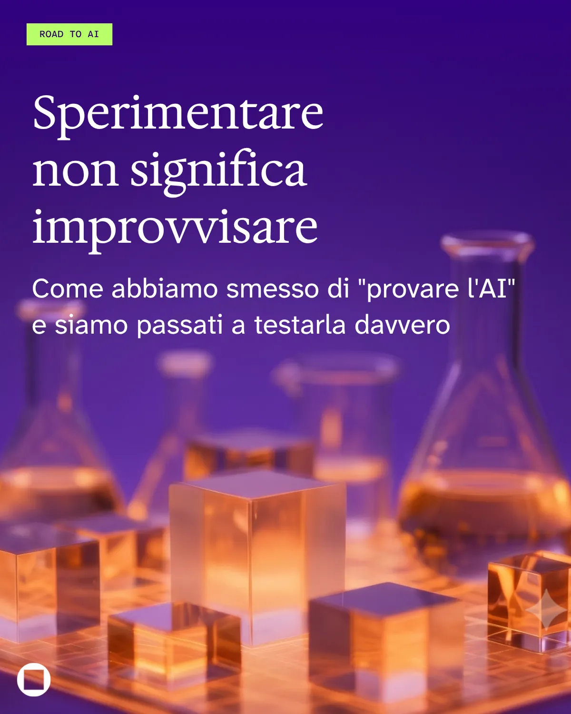
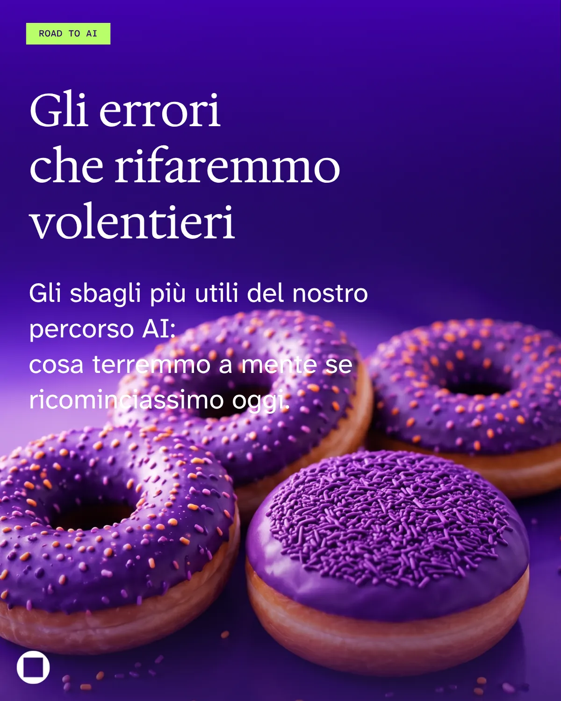
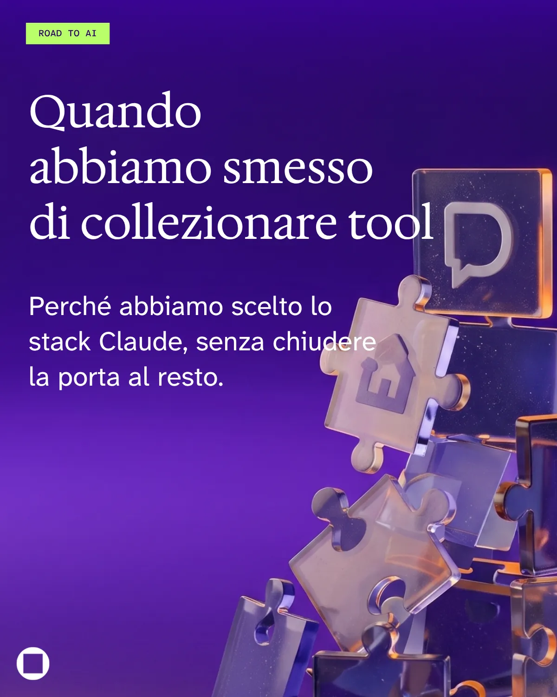
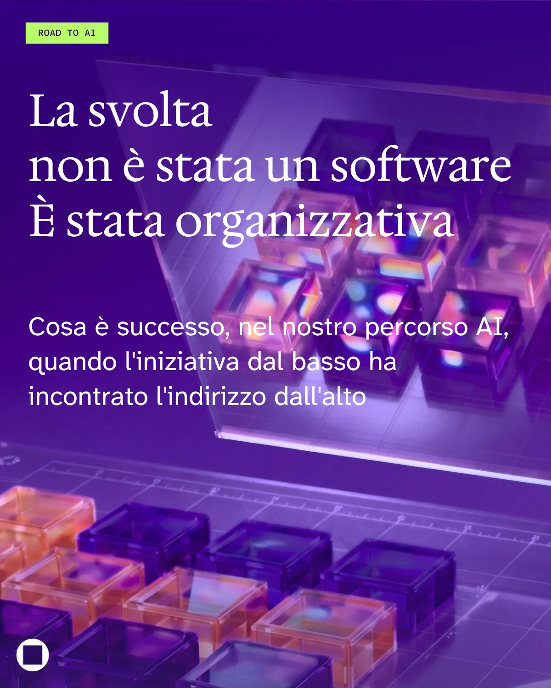
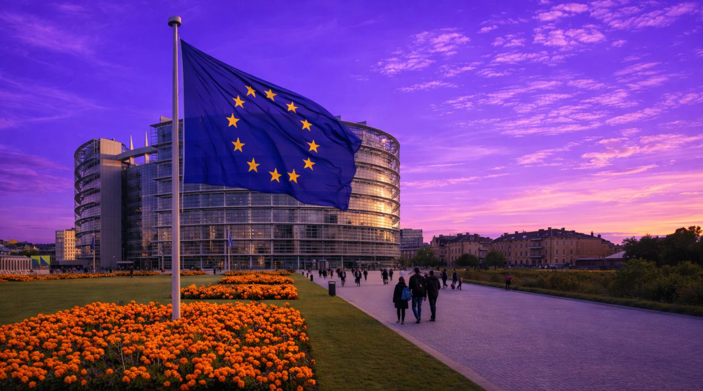
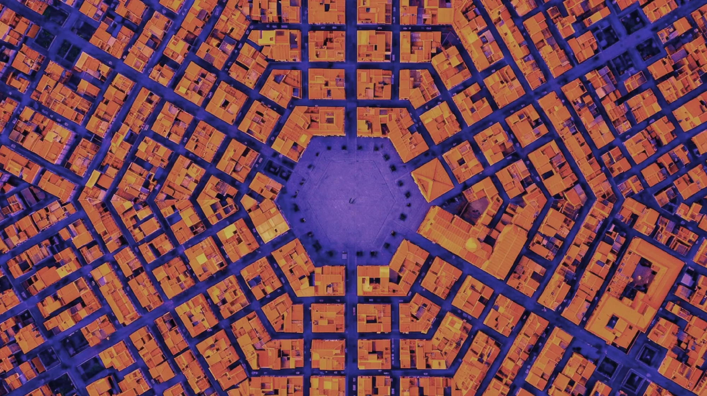
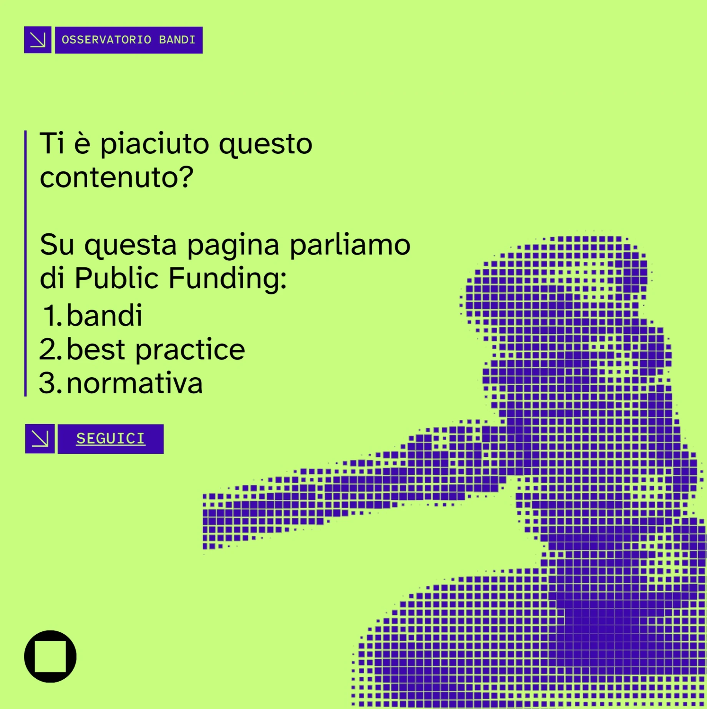
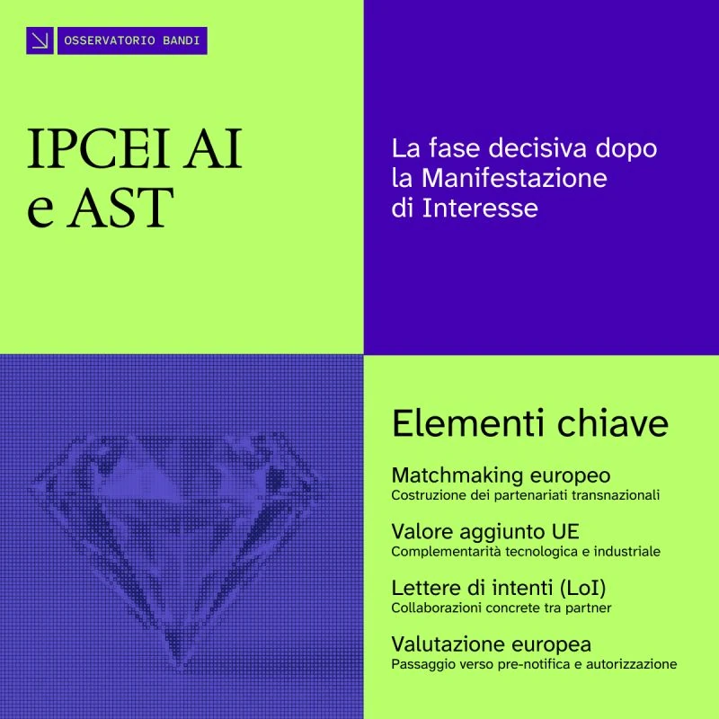
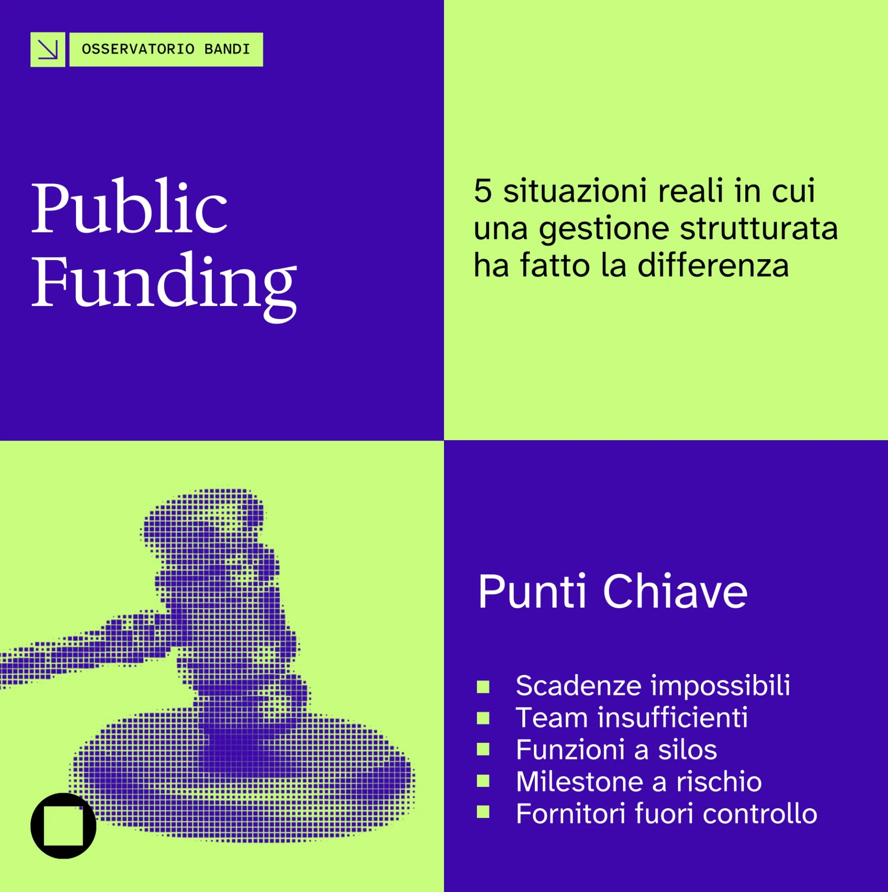
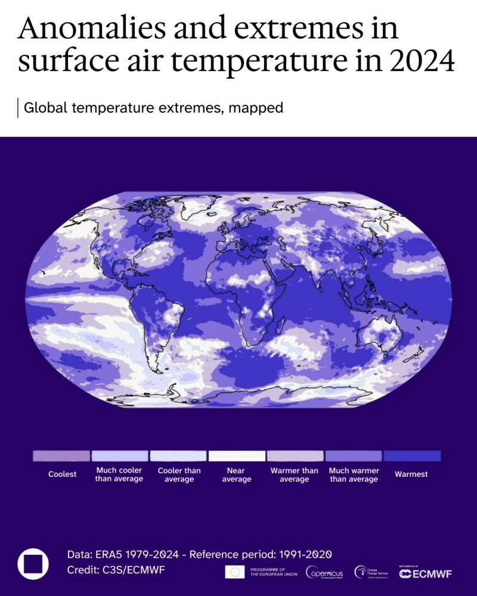